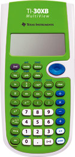
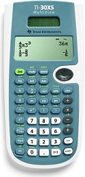

WebCal 計數機網頁
Texas Instruments TI-30XB / TI-30XS MultiView
|  |  |
| TI-30XB | TI-30XS |
編寫日期: 2007年8月15日
TI-30XB與TI-30XS功能完全相同，分別是TI-30XS可以使用光能運作。TI-30XB/XS可以選用數學顯示模式(MATHPRINT)，與CASIO ES系列計算機相似，亦即是數值為分數或平方根等算式或符號，都可以切換 為一般教科書的排列位置、顯示形式(輸入算式及答案)，提供更加直覺式的操作介面，因此更容易了解。其實很適合中學使用，不過由於這部計算機使用圓點顯示形式(Dot matrix)，所以不會獲得香港考評局接納為准用計算機。
TI-30XB的計算功能不多，除了沒有程式功能外，亦沒有微積分、基數、複數、解方程式、特別回歸分析、矩陣、向量、單位轉換等等功能，所以TI-30X只可說是一部有基本計算功能的科學計算機。
TI-30XB有四行用作顯示，因此閱讀及找尋資料會較方便及容易。另外較特別的是它的表單計算功能，共有兩種表格功能，第一種表格功能(Function Table)與CASIO fx-991ES的相似，亦即是定義函數f(x)的關係、輸x的起始值及遞增值後，可以自動產生出變數x對應f(x)值的一覽表。第二種表格功能(Data Editor and list formulas)，容許將數據輸入三欄(List)中，每一欄最多可以有四十二項，可設定欄的算式(List formula)，產生一個表格以顯示數據間的變化。